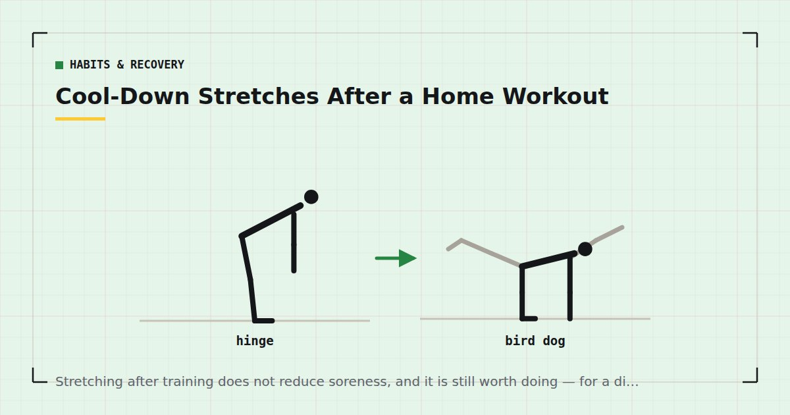

Habits & Recovery
Cool-Down Stretches After a Home Workout
Stretching after training does not reduce soreness, and it is still worth doing — for a different reason than the one you were probably given.

Cool-down stretching is among the most universally recommended and least examined habits in fitness. The reason usually given for it turns out not to survive contact with the evidence, and there is a better reason available.
The claim that does not hold
The standard justification is that stretching after exercise reduces muscle soreness.
A Cochrane review examined this directly and found that stretching before or after exercise does not produce clinically important reductions in muscle soreness.1 This is one of the firmer negative findings in the area, and it directly contradicts advice most of us were given.
It is worth being clear about what that does and does not mean. It does not mean stretching is useless or harmful. It means the specific claim — stretch afterwards and you will be less sore — is not supported. If reducing soreness is your goal, the interventions with better support are covered in DOMS: why you're sore and what actually helps.
What stretching does do
It increases range of motion. Reliably and reasonably well established, given sufficient frequency and duration. If you want to be able to squat deeper, reach further overhead or sit more comfortably on the floor, stretching is how you get there.
That is a real and useful outcome. It is simply a different one from soreness prevention, and confusing the two leads people to abandon stretching when they notice it is not making them less sore.
Many people find it pleasant. Not a trivial point. A few minutes of quiet stretching at the end of a session is a reasonable way to mark the end of training, and enjoyment is a legitimate reason to do something.
What the evidence does not support: that stretching prevents injury in any general sense, corrects posture, or "releases" anything. Those claims are made confidently and rest on considerably less than they suggest.
What a cool-down is actually for
Separate from stretching, and worth distinguishing.
Two or three minutes of easy movement after hard exercise brings the heart rate down gradually rather than abruptly. The main practical benefit is comfort — stopping dead after intense effort can leave people lightheaded, because blood pooling in the legs reduces return to the heart.
That is a modest and genuine benefit, and it takes two minutes of walking around. It matters more after conditioning work than after a strength session, and it matters especially if you have to be presentable afterwards, as covered in the lunch break workout.
A five-minute sequence
Done after training when muscles are warm. Hold each for thirty seconds, breathing normally, at a point of mild tension rather than pain.
Hip flexor stretch — 30s each side
Half-kneeling, tuck the pelvis under and gently push the hips forward. The single most useful stretch for anyone who sits all day, since the hip flexors spend the working day shortened.
Seated or standing hamstring stretch — 30s each side
Keep the back flat and hinge from the hips rather than rounding the spine.
Chest and shoulder stretch — 30s each side
Forearm against a doorframe, rotate the body away. Counteracts the position pressing work and desk work both encourage.
Figure-four glute stretch — 30s each side
Lying on your back, ankle across the opposite knee, pulling the far thigh toward you.
Calf stretch — 30s each side
Against a wall, back leg straight, heel down. Useful if ankle range is limiting your squat depth — see bodyweight squat form.
Thoracic rotation — 30s each side
Lying on your side, knees bent, rotating the top arm across and behind you.
How long to hold, and how often
For range of motion, what appears to matter is total time under stretch accumulated over weeks rather than what happens in any one session.
Thirty to sixty seconds per stretch is a reasonable working figure. Shorter holds do less; considerably longer holds do not appear to add much. Frequency matters more than duration — five minutes most days will do more for your range than twenty minutes once a week.
You should feel mild tension, not pain. Stretching into pain is not more effective and is a reasonable way to strain something.
Range of motion gains are slow. Expect meaningful change over months rather than weeks, and expect it to regress if you stop.
When not to bother
Three situations where cool-down stretching is the wrong use of your time.
When the session is short and time is the constraint. In a fifteen-minute workout, five minutes of stretching is a third of your training time spent on something that does not build strength. Walk around for a minute and move on — the cutting order is in the guide to training under 30 minutes.
When you do not actually want more range of motion. If you can squat comfortably, reach overhead and get on and off the floor without difficulty, additional flexibility is not obviously useful. It is not harmful either; it is just not a priority.
When you are doing it hoping it prevents injury or soreness. Those are the two reasons it is usually recommended and neither is well supported.
None of this is an argument against stretching. It is an argument for being clear about why. If five quiet minutes at the end of a session is something you look forward to, that is a perfectly good reason to keep it — and a session you look forward to finishing is one you are more likely to start.
Stretching versus mobility
Worth distinguishing, since the terms get used interchangeably and are not the same.
Stretching generally means holding a position at the end of your passive range. It increases how far a joint can be moved.
Mobility work generally means moving actively through a range, often against light resistance. It increases how far you can move a joint under your own control, which is arguably the more useful quality.
For most people the more valuable of the two is mobility, particularly if the underlying problem is sitting for long periods rather than genuinely short muscles — the routine is in the mobility routine for people who sit all day.
Adult activity guidance focuses on aerobic and muscle-strengthening activity rather than flexibility,2 which is a reasonable indication of relative priority. Stretch if you want more range or because you enjoy it. Do not stretch instead of training.
Where to go next
For what actually helps with soreness, see DOMS: why you're sore and what actually helps. For the warm-up side, see how to warm up in five minutes.
Frequently asked questions
Does stretching after a workout reduce soreness?
No. A Cochrane review found that stretching before or after exercise does not produce clinically important reductions in muscle soreness. It is one of the firmer negative findings in this area and it contradicts very widespread advice.
Is it worth stretching after exercise?
Yes, if your goal is more range of motion, which stretching does reliably produce. Also if you find it pleasant, which is a legitimate reason. Not if you are doing it to prevent soreness or injury, neither of which it reliably does.
How long should I hold a stretch?
Thirty to sixty seconds per stretch, at a point of mild tension rather than pain. Frequency matters more than duration — five minutes most days will do more for your range than twenty minutes once a week.
What is the difference between stretching and mobility work?
Stretching means holding a position at the end of your passive range and increases how far a joint can be moved. Mobility work means moving actively through a range and increases how far you can move a joint under your own control, which is often the more useful quality.
What is a cool-down for?
Bringing the heart rate down gradually rather than abruptly, which mainly prevents the lightheadedness that can follow stopping dead after intense effort. Two or three minutes of easy walking covers it, and it matters more after conditioning than after strength work.
Should I skip stretching if my workout is short?
Yes. In a fifteen-minute session, five minutes of stretching is a third of your training time spent on something that does not build strength. Walk around for a minute instead, and do flexibility work as a separate session if you want it.
Sources and further reading
- Herbert RD, de Noronha M, Kamper SJ. “Stretching to prevent or reduce muscle soreness after exercise.” Cochrane Database of Systematic Reviews, 2011;(7):CD004577. PubMed.
- World Health Organization. WHO Guidelines on Physical Activity and Sedentary Behaviour. 2020.
- NHS. Physical activity guidelines for adults aged 19 to 64.
- Dupuy O, Douzi W, Theurot D, Bosquet L, Dugué B. “An Evidence-Based Approach for Choosing Post-exercise Recovery Techniques to Reduce Markers of Muscle Damage, Soreness, Fatigue, and Inflammation: A Systematic Review With Meta-Analysis.” Frontiers in Physiology, 2018;9:403. PubMed.
Comments
Comments are not enabled yet. Add a hosted comment embed (Disqus, Commento, Giscus) inside this container when you are ready.